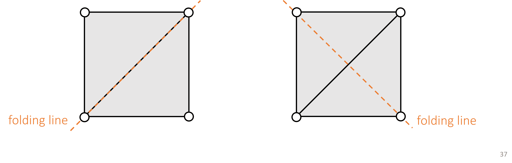
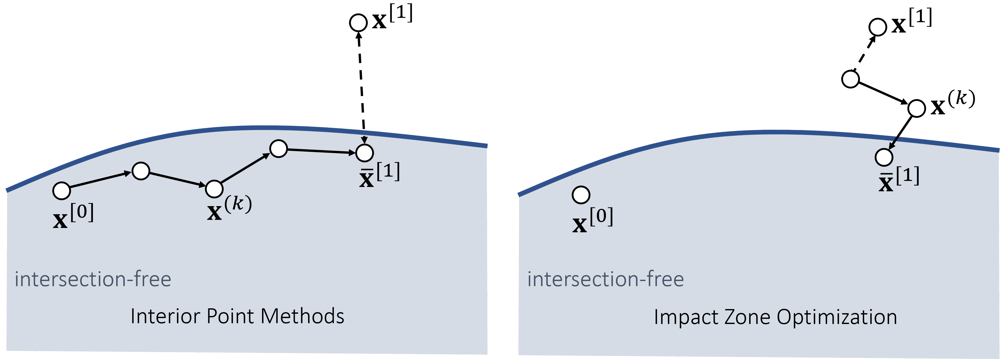

基于物理的动画：布料与软体动力学
本文是博主在实习公司制作的课程讲义，内容是基于物理的动画：布料与软体动力学。
原课程对应的幻灯片可以点击这里下载。
软体仿真
概述
软体的性质
- 软体或可变形体，是一系列相对刚体具有可变形性和延展性，而相对流体具有一定的整体性的物体。包括布料、橡胶制品、纤维制品等。
- 一般地，物理引擎存储的软体仿真状态\(\mathbf s = \{\mathbf v, \mathbf x\}\)是一个二元组，其中 \(\mathbf v = \{\mathbf v_1, \dots, \mathbf v_n\} \in \mathbb R^{3n}\) 为软体各顶点的速度，\(\mathbf x = \{\mathbf x_1, \dots, \mathbf x_n\} \in \mathbb R^{3n}\)为各顶点的位移。
- 记顶点\(i\)的质量为\(m_i\)，则\(\mathbf M \in \mathbb R^{3n \times 3n}\)为\(3 \times 3\)对角分块质量矩阵，其第\(i\)个对角\(3 \times 3\)块为\(m_i \mathbf I\)。
软体的运动
软体的运动由各顶点的运动决定，自由度很高。
因此，软体仿真算法的类型相当丰富，各类优化手段也层出不穷。
符号约定
仿真器在每一帧执行物理演算，并将结果提交给渲染器。
在仿真流水线中，用上标方括号表示第\(k\)帧的结果。例如 \(t^{[k]}\) 为第 \(k\) 帧的时刻，\(\mathbf s^{[k]}\) 为仿真对象在第 \(k\) 帧时的状态。
在每帧执行的迭代算法中，用上标圆括号表示第\(k\)次迭代后的结果。例如\(\mathbf x^{(k)}\)表示第\(k\)次迭代的位移向量。
质点-弹簧系统
预备知识
弹簧模型 I
设三维空间中的弹簧\(e\)连接顶点\(0, 1\)，原长为\(L\)，劲度系数为\(k\)。当两端位移向量为\(\mathbf x_{01}\)时，其具有弹性势能
\[ E(\mathbf x) = \frac{k}{2}(||\mathbf x_{01}|| - L)^2 \]
弹力为
\[ \begin{cases} \mathbf f(\mathbf x) = - \nabla E(\mathbf x) = \left[ \begin{matrix} - \nabla_0 E(\mathbf x) \\ - \nabla_1 E(\mathbf x) \end{matrix} \right] = \left[ \begin{matrix} \mathbf f_e \\ -\mathbf f_e \end{matrix} \right]， \\ \mathbf f_e = -k \left(||\mathbf x_{01}|| - L \right) \frac{\mathbf x_{01}}{||\mathbf x_{01}||} \end{cases} \]
Hessian (tangent stiffness) 为
\[ \begin{cases} \mathbf H(\mathbf x) = \left[ \begin{matrix} \frac{\partial^2 E}{\partial x_0^2} & \frac{\partial^2 E}{\partial x_0 \partial x_1} \\ \frac{\partial^2 E}{\partial x_1 \partial x_0} & \frac{\partial^2 E}{\partial x_1^2} \end{matrix} \right] = \left[ \begin{matrix} \mathbf H_e & -\mathbf H_e \\ -\mathbf H_e & \mathbf H_e \end{matrix} \right]， \\ \mathbf H_e = k \frac{\mathbf x_{01} \mathbf x_{01}^T}{||\mathbf x_{01}||^2} + k \left( 1 - \frac{L}{||\mathbf x_{01}||} \right) \left( \mathbf I - \frac{\mathbf x_{01} \mathbf x_{01}^T}{||\mathbf x_{01}||^2} \right) \end{cases} \]
多弹簧系统
当顶点连接多个弹簧时，其具有的弹性势能应为所有连接弹簧的弹性势能之和，弹力亦然。
\[ \begin{cases} E = \sum_{e=0}^3 E_e, \\ \mathbf f_i = - \nabla_i E = \sum_{e=0}^3 \mathbf f_e. \end{cases} \]
软体表面基本模型
网状弹簧系统
质点-弹簧模型为我们提供了一个简易的模拟软体表面的物理模型。对于三角形网格，我们可以运用图论几何知识，建立如下图所示的网状弹簧系统：
其中，蓝色弹簧用于防止软体表面过度弯折。
质点-弹簧系统仿真流水线 - 半隐式积分
输入状态\(\mathbf s^{[0]} = \{\mathbf v^{[0]}, \mathbf x^{[0]}\}\)
对每个弹簧\(e\)，更新其对各两端顶点\(i, j\)施加的弹力
\[ \begin{cases} \mathbf f_e^{[0]} = -k(||\mathbf x_i^{[0]} - \mathbf x_j^{[0]}|| - L_e) \frac{\mathbf x_i^{[0]} - \mathbf x_j^{[0]}}{||\mathbf x_i^{[0]} - \mathbf x_j^{[0]}||}, \\ \mathbf f_i^{[0]} \leftarrow \mathbf f_i^{[0]} + \mathbf f_e^{[0]}, \\ \mathbf f_j^{[0]} \leftarrow \mathbf f_j^{[0]} - \mathbf f_e^{[0]} \end{cases} \]
对每个顶点\(i\)，更新仿真状态
\[ \begin{cases} \mathbf v_i^{[1]} = \mathbf v_i^{[0]} + \Delta t m_i^{-1} \mathbf f_i^{[0]}, \\ \mathbf x_i^{[1]} = \mathbf x_i^{[0]} + \Delta t \mathbf v_i^{[1]} \end{cases} \]
输出状态\(\mathbf s^{[1]} = \{\mathbf v^{[1]}, \mathbf x^{[1]}\}\)
半隐式积分的问题
\(k\)过大、\(\Delta t\)过大都可能导致显式积分/半隐式积分仿真过程中"能量爆炸"（overshooting）。
如图所示，当弹簧伸长时，弹力方向会试图拉回顶点。若劲度系数\(k\)过大，或时间步长\(\Delta t\)过大，下一帧的顶点位置将超越弹簧的另一端点，且这一过程可以继续下去，最终导致整个软体表面"炸裂"。
隐式积分
在规模较大的质点-弹簧系统中，采用隐式积分可以提升数值稳定性。即
\[ \begin{cases} \mathbf v_i^{[1]} = \mathbf v_i^{[0]} + \Delta t m_i^{-1} \mathbf f_i^{[1]}, \\ \mathbf x_i^{[1]} = \mathbf x_i^{[0]} + \Delta t \mathbf v_i^{[1]} \end{cases} \]
若顶点受力仅与其位置有关，消掉\(\mathbf v_i^{[1]}\)，我们得到
\[ \mathbf x_i^{[1]} = \mathbf x_i^{[0]} + \Delta t \mathbf v_i^{[0]} + \Delta t^2 m_i^{-1} \mathbf f(\mathbf x_i^{[1]}) \]
这是一个关于\(\mathbf x_i^{[1]}\)的非线性方程，可以用牛顿法求解------但在各类论文中，我们常见的是它的优化形式。
隐式积分 - 优化形式
可以证明，方程
\[ \mathbf x^{[1]} = \mathbf x^{[0]} + \Delta t \mathbf v^{[0]} + \Delta t^2 \mathbf M^{-1} \mathbf f(\mathbf x^{[1]}) \]
有唯一解，当且仅当优化问题
\[ \begin{cases} \mathbf x^{[1]} = \arg \min F(\mathbf x), \\ F(\mathbf x) = \frac{1}{2 \Delta t^2} ||\mathbf x - \mathbf x^{[0]} - \Delta t \mathbf v^{[0]}||^2_{\mathbf M} + E(\mathbf x) \end{cases} \]
有唯一解，其中\(||\mathbf x||^2_{\mathbf M} = \mathbf x^T \mathbf M \mathbf x\)，\(\mathbf M \in \mathbb R^{3n \times 3n}\)为各顶点的质量矩阵，\(E(\mathbf x)\)为系统势能。
上式的物理意义为，最小化预测位置\(\mathbf x^{[0]} + \Delta t \mathbf v^{[0]}\)与实际位置\(\mathbf x\)的"距离"，与系统势能之和。
牛顿法
假设函数\(F(\mathbf x)\)在区间内有唯一极小值\(\mathbf x\)，那么由泰勒展开，得
\[ \mathbf 0 = \nabla F(\mathbf x) \approx \nabla F(\mathbf x^{(k)}) + \frac{\partial F^2(\mathbf x^{(k)})}{\partial \mathbf x^2}(\mathbf x - \mathbf x^{(k)}) \]
解出\(\mathbf x\)，有
\[ \mathbf x = \mathbf x^{(k)} - \left(\frac{\partial F^2(\mathbf x^{(k)})}{\partial \mathbf x^2} \right)^{-1} \nabla F(\mathbf x^{(k)}) \]
于是，求解\(\mathbf x\)，可以用如下的迭代步骤：
牛顿法（二阶梯度）
对目标函数求导，有
\[ \begin{cases} F(\mathbf x) = \frac{1}{2 \Delta t^2} ||\mathbf x - \mathbf x^{[0]} - \Delta t \mathbf v^{[0]}||^2_{\mathbf M} + E(\mathbf x), \\ \nabla F(\mathbf x) = \frac{1}{\Delta t^2} \mathbf M(\mathbf x - \mathbf x^{[0]} - \Delta t \mathbf v^{[0]}) - \mathbf f(\mathbf x), \\ \frac{\partial ^2 F(\mathbf x)}{\partial \mathbf x^2} = \frac{1}{\Delta t^2} \mathbf M + \mathbf H(\mathbf x) \end{cases} \]
在牛顿法隐式积分过程中，为求解
\[ \Delta \mathbf x \gets - \left(\frac{\partial F^2(\mathbf x^{(k)})}{\partial \mathbf x^2} \right)^{-1} \nabla F(\mathbf x^{(k)}) \]
这一步，需要求解线性方程组
\[ \left( \frac{1}{\Delta t^2} \mathbf M + \mathbf H(\mathbf x^{(k)}) \right) \Delta \mathbf x = -\frac{1}{\Delta t^2} \mathbf M(\mathbf x^{(k)} - \mathbf x^{[0]} - \Delta t \mathbf v^{[0]}) + \mathbf f(\mathbf x^{(k)}) \]
实现时，常关注以下特征：
- 初始值\(\mathbf x^{(0)}\)的设定（往往为\(\mathbf x^{[0]}\)或\(\mathbf x^{[0]} + \Delta t \mathbf v^{[0]}\)）
- 求解线性方程组的方法（直接法、迭代法）
- 线性方程组系数矩阵\(\frac{1}{\Delta t^2} \mathbf M + \mathbf H(\mathbf x^{(k)})\)是否半正定（影响解的唯一性和求解算法的选用），是否对角占优（影响求解算法的选用和优化）
- 牛顿法迭代次数的多少（工程实践中，一般迭代次数不多）
可以证明，当弹簧伸长时，系数矩阵一定是半正定的，有唯一解。当弹簧压缩时，系数矩阵不一定是半正定的，可能出现多解，如下图所示：
弯折模型
简单的防弯折弹簧模型
简单的防止表面过度弯折的弹簧可以如下建立：在初始状态下，穿过相邻的三角形边，在对角顶点之间建立弹簧。

该模型存在问题：当顶点整体产生平移，而导致表面弯折时，由于两点之间距离没有发生改变，该弹簧不会产生有效的约束弹力。
局部曲率模型
为使软体表面维持原始的弯曲程度，可以利用数学上的概念，建立局部曲率模型，也称Quadratic Bending Model（二次弯曲模型）。根据离散拉普拉斯-贝尔特拉米算子的定义，建立与两个相邻三角面的表面几何有关的矩阵
\[ \mathbf q = \left[ \begin{matrix} (\cot \theta_1 + \cot \theta_3 ) \mathbf I \\ (\cot \theta_0 + \cot \theta_2 ) \mathbf I \\ (\cot \theta_0 + \cot \theta_1 ) \mathbf I \\ (\cot \theta_2 + \cot \theta_3 ) \mathbf I \\ \end{matrix} \right] \in \mathbb R^{12 \times 3}， \]
那么，该相邻三角面定义的局部弯曲能量为
\[ E(\mathbf x) = \frac{3||\mathbf q^T \mathbf x||^2}{2(A_0 + A_1)}, \]
其中\(\mathbf x\)为四个顶点的原始位置，\(A_0, A_1\)为两个三角形的原始面积。可以证明，当该相邻三角面形成的二面角的度数为\(0\)时，\(E(\mathbf x) = 0\)，否则\(E(\mathbf x) \neq 0\)。
当仿真过程中，三角面出现弯曲现象时，可以计算此时的\(E(\mathbf x)\)产生的张力
\[ \mathbf f(\mathbf x) = -\nabla E(\mathbf x) \]
进而对各顶点施加弯曲约束力。由于该方法容易得到解析形式的能量梯度和Hessian，因此与隐式积分方法契合度高。
不过，当初始状态并非平面时，\(E \neq 0\)，该模型将给出不合预期的结果。可以采用Cubic shell model、Projective Dynamics model (cotangent formula) 等加以改进。
质点-弹簧系统的弯折锁问题 I
质点-弹簧系统往往具有"弯折锁"的问题：在某些方向上，被仿真的软体永远不可能产生弯曲现象，即便我们没有添加任何弯曲相关的约束。
例如，若我们在顶点四边形的对角线上建立弹簧，则该四边形永远不可能沿着另一对角线弯折。这是因为该弹簧会阻碍其两端顶点互相接近。

在实时物理仿真应用中，该问题在视觉上的表现通常并不明显，但由于欠缺物理真实性，因此质点-弹簧系统难以应用于严肃的应用中。
产生这一问题的根本原因是，三角形网格上的质点-弹簧模型对软体模型的约束能力存在下确界，即模型各顶点的自由度存在上确界，而软体模型的各顶点本应可以具有更高的自由度。即，质点-弹簧系统对软体的仿真导致了自由度的丢失。
设软体表面为三角形网格，且我们对网格中的每一条边都建立了弹簧。网格的顶点数为\(V\)，边数为\(E\)，位于模型边界处的边数为\(E_b\)，那么由欧拉公式，可以证明
\[ E = 3(V - 1) - E_b \]
软体仿真中的未知量为各顶点的位置，自由度为\(3V\)，这也是理论上的最大自由度。但由于我们建立了\(E\)个弹簧，若视它们均为刚性约束，则系统自由度变为
\[ 3V - E = 3 + E_b. \]
容易发现，这与模型内部的三角剖分方式无关。
质点-弹簧系统的弯折锁问题 III
提高质点-弹簧仿真系统的自由度的方式包括但不限于：
- （hack）当弹簧压缩时，赋予更小的\(k\)
- （hack）在小范围的压缩/伸长量内，将弹簧弹力设为0
- 选择性地对模型内部的每一条边建立弹簧
- 进一步地，设置仿真LOD，进行逐层仿真，每层仿真使用的模型不同
约束法
约束的建立与求解
高强度弹簧的仿真
生活中的布料、橡胶模型等物体，在小范围的变形之外会具有较高的刚性，对应质点-弹簧系统中较高的劲度系数\(k\)。然而，质点-弹簧系统的半隐式/隐式积分法均对较大的\(k\)敏感：
- 对半隐式积分/显式积分而言，较大的\(k\)将可能导致overshoot，需要更小的时间步长，对调参提出要求的同时降低了仿真效率
- 对隐式积分而言，较大的\(k\)将导致在弹簧压缩时，需要求解病态的线性方程组，所需计算时间更长
因此，在实时物理仿真应用中，常采用约束法处理这类高强度弹簧的仿真。
弹簧约束
若弹簧强度较高，我们期望在每一帧的仿真结束后，两端顶点\(i, j\)的间距都能回到原长\(L\)。于是，我们可以定义约束函数
\[ \phi(\mathbf x) = ||\mathbf x_i - \mathbf x_j|| - L \]
当\(\phi(\mathbf x) = 0\)时，弹簧长度为原长，即满足约束。将当前状态变换到满足约束的状态的过程，称约束投影。
约束投影作为优化问题
我们期望在约束投影的过程中，满足"最短路径"原则，即此过程中系统的状态（质量加权顶点的位置）的改变量最小。形式化地，这对应优化问题
\[ \begin{cases} \{\mathbf x_{i}^{\text{new}}, \mathbf x_{j}^{\text{new}}\} = \arg \min \left \{ \frac{1}{2} (m_i ||\mathbf x_{i}^{\text{new}} - \mathbf x_i||^2 + m_j ||\mathbf x_{j}^{\text{new}} - \mathbf x_j||^2) \right \}, \\ s. t. \ \phi(\mathbf x) = 0 \end{cases} \]
几何上，该优化过程将不满足\(\phi(\mathbf x) = 0\)的状态沿最短路径移动到了约束流形\(\phi(\mathbf x)\)的边缘，如图所示：
对于弹簧约束而言，该优化问题的解是显然的：
\[ \begin{cases} \mathbf x_{i}^{\text{new}} = \mathbf x_i - \frac{m_j}{m_i + m_j}(||\mathbf x_i - \mathbf x_j|| - L) \frac{\mathbf x_i - \mathbf x_j}{||\mathbf x_i - \mathbf x_j||}, \\ \mathbf x_{j}^{\text{new}} = \mathbf x_j + \frac{m_i}{m_i + m_j}(||\mathbf x_i - \mathbf x_j|| - L) \frac{\mathbf x_i - \mathbf x_j}{||\mathbf x_i - \mathbf x_j||}, \\ \end{cases} \]
除了弹簧原长约束，我们也可以定义系统中的其他约束，如位置约束、弯曲约束、四面体张力约束等，有些碰撞也可以视作约束进行求解。但它们的约束函数可能更复杂，涉及系统中的更多变量，也更难求解。
整体约束的投影 - 串行法
对系统中的多个约束，我们需要保证它们在最终都能得到正确投影，因此需要一个整体的求解框架。基本方法包括串行法（Gauss-Seidel style）和并行法（Jacobi style）。UE5 Chaos 采用CPU上的串行法求解约束。
- 串行法的约束求解相当直接："对所有约束，按顺序求解它们，然后更新顶点位置"，迭代这一步骤若干次即可
- 如果要严格投影所有约束，该方法可能需要较多的迭代次数，且最终结果可能存在"振荡"现象，且与约束的求解顺序有关
- 该方法天生难以并行化，但其并行化的实践也有一些研究成果（染色法）
整体约束的投影 - 并行法
- 并行法的约束求解，会"为每个约束记录其对顶点的影响程度，最后统一对各顶点根据其累积的影响程度，进行加权平均，更新顶点位置"，这一步骤也可以迭代若干次。
- 如果要严格投影所有约束，该方法的收敛率较串行法低，但相对串行法避免了"振荡"现象
- 该方法的整体计算量大于串行法，但可并行性较高，易于并行化
Position Based Dynamics
PBD流水线
Position Based Dynamics (PBD) 是一个被实时物理仿真应用广泛使用的经典约束仿真方法，UE5 Chaos、Nvidia PhysX和Bullet等物理引擎均使用PBD进行软体仿真，其仿真流水线如下：
- 输入状态\(\mathbf s^{[0]} = \{\mathbf v^{[0]}, \mathbf x^{[0]}\}\)
- 对每个顶点\(i\)，更新仿真状态，这里的\(\mathbf f^{[0]}\)不考虑约束力（内力），只涉及环境力（如重力、空气阻力、用户施加的力等） \[ \begin{cases} \mathbf v = \mathbf v^{[0]} + \Delta t \mathbf M^{-1} \mathbf f^{[0]}, \\ \mathbf x = \mathbf x^{[0]} + \Delta t \mathbf v \end{cases} \]
- 进行约束投影，得到新的顶点位置 \[ \mathbf x^{\text{new}} = \text{Projection}(\mathbf x) \]
- （进行碰撞后处理后）更新速度和位置 \[ \begin{cases} \mathbf v^{[1]} = \mathbf v + (\mathbf x^{\text{new}} - \mathbf x) / \Delta t, \\ \mathbf x^{[1]} = \mathbf x^{\text{new}} \end{cases} \]
- 输出状态\(\mathbf s^{[1]} = \{\mathbf v^{[1]}, \mathbf x^{[1]}\}\)
注意：
PBD方法在第一步仿真时，一般不考虑约束相关的力，如弹簧的弹力，仅将被仿真对象视作粒子系统处理。若这一步仿真考虑了约束相关的力，使用了较复杂的动力学仿真（如隐式积分），则一般将后续的约束投影视作让结果更合理的后处理过程，这一方法被称为Strain Limiting，可避免大形变时的瑕疵
最后的速度更新\(\mathbf v^{[1]} = \mathbf v + (\mathbf x^{\text{new}} - \mathbf x) / \Delta t\)在PBD原始论文中，是\(\mathbf v^{[1]} = (\mathbf x^{\text{new}} - \mathbf x) / \Delta t\)，但如果综合考虑第一步仿真得到的\(\mathbf v\)，通常可以带来更好的动力学效果。
PBD的优点：
- 计算量较小，在低分辨率下效果较好，适合实时物理仿真应用场景
- 约束求解易于并行化（PhysX / nvcloth 在GPU上并行求解约束投影）
- 与刚体Shape Matching和部分流体仿真算法框架契合，易于迁移
PBD的缺点：
- 约束投影的迭代次数往往直接影响到最终结果。一般地，若迭代次数较多，则最终的软体表面的刚性较强，容易产生"弯折锁"问题；反之，若迭代次数较少，则最终的软体表面更柔软。为呈现一定的美术效果，往往需要多次调试此参数
- 软体表面的分辨率（弹簧约束的密度）也会直接影响到最终结果。一般地，若表面分辨率高，则弹簧约束密度较高，整体细节层次更高，只需较少的迭代次数即可收敛，因此一般会呈现出较高的刚性；反之，若表面分辨率低，则需较多的迭代次数才可收敛，当迭代次数设置较小时，会呈现出整体的柔性
- 由于以上两个特性，PBD不具备较高的物理真实性，但能够通过调参控制整体的美术表现，因此在游戏物理引擎中应用广泛
Projective Dynamics
Projective Dynamics Projective Dynamics (PD) 是一个更具有物理意义的约束法，其为每个约束定义了其势能（通常为二次形式），最终采用类似隐式积分的牛顿法求解。不同的是：
- 该方法继承了PBD的约束投影思路，同样将约束力（内力）和环境力（外力）分开考虑，系统解耦程度高，应用范围广
- 该方法的约束投影由独立步骤完成，进而使投影后的状态与投影前的状态无关，使得该方法的线性方程组的系数矩阵被简化为实对称矩阵（但不一定半正定），仅与当前系统的约束有关，与被仿真对象无关，因此可预计算，效率较高
限于篇幅，本讲仅涉及PD对质点-弹簧系统的建模，不涉及其他约束形式和系统的具体实现。
PD定义的约束势能
对每个约束\(c\)，根据约束类型，PD定义其约束势能的类型为
\[ E_c(\mathbf x) = \frac{w_c}{2} ||\mathbf A_c \mathbf x - \mathbf B_c \mathbf y||^2 \]
其中\(w_c\)为约束\(c\)的正权重，\(\mathbf y\)是\(\mathbf x\)在约束\(c\)上的使势能为\(0\)的投影，\(\mathbf A_c\)和\(\mathbf B_c\)是两个与\(c\)的类型有关的常量矩阵。PD的约束投影为一独立过程，因此在求解\(E_c(\mathbf x)\)的梯度时，认为\(\mathbf y\)与\(\mathbf x\)无关。
例如，当\(c\)为弹簧约束时，有
\[ E_c(\mathbf x, \mathbf y) = \frac{w_c}{2} ||(\mathbf x_i - \mathbf x_j) - (\mathbf x_i^{\text{new}} - \mathbf x_j^{\text{new}})||^2 \]
可以看出，该式与弹簧弹性势能的定义式相同，但劲度系数替换成了约束权重，且约束投影与原状态无关，故
\[ \begin{cases} \mathbf f_{c, i}(\mathbf x, \mathbf y) = -\nabla_i E_c(\mathbf x, \mathbf y) = w_c ((\mathbf x_i^{\text{new}} - \mathbf x_j^{\text{new}}) - (\mathbf x_i - \mathbf x_j)), \\ \mathbf H_{c}(\mathbf x) = \frac{\partial^2 E_c(\mathbf x, \mathbf y)}{\partial \mathbf x_i^2} = w_c\mathbf I_3 \end{cases} \]
注意到，此时由两个质点组成的弹簧系统的Hessian
\[ \mathbf H_c = \left[ \begin{matrix} \mathbf H_{c}(\mathbf x) & -\mathbf H_{c}(\mathbf x) \\ -\mathbf H_{c}(\mathbf x) & \mathbf H_{c}(\mathbf x) \end{matrix} \right] = w_c\left[ \begin{matrix} \mathbf I_3 & -\mathbf I_3 \\ -\mathbf I_3 & \mathbf I_3 \end{matrix} \right] \]
为常量矩阵。这使得PD相对隐式积分方法，在线性方程组的系数矩阵的计算上更方便。
PD在质点-弹簧系统上的实例
设所有弹簧的劲度系数相同为\(w_c\)，则
\[ \begin{gathered} E(\mathbf x) = \frac{w_c}{2} ||(\mathbf x_0 - \mathbf x_1) - (\mathbf x_{0, 0}^{\text{new}} - \mathbf x_{0, 1}^{\text{new}})||^2 + \\ \frac{w_c}{2} ||(\mathbf x_0 - \mathbf x_2) - (\mathbf x_{1, 0}^{\text{new}} - \mathbf x_{1, 2}^{\text{new}})||^2 + \\ \frac{w_c}{2} ||(\mathbf x_0 - \mathbf x_3) - (\mathbf x_{2, 0}^{\text{new}} - \mathbf x_{2, 3}^{\text{new}})||^2 + \\ \frac{w_c}{2} ||(\mathbf x_1 - \mathbf x_2) - (\mathbf x_{3, 1}^{\text{new}} - \mathbf x_{3, 2}^{\text{new}})||^2 + \\ \frac{w_c}{2} ||(\mathbf x_2 - \mathbf x_3) - (\mathbf x_{4, 2}^{\text{new}} - \mathbf x_{4, 3}^{\text{new}})||^2, \\ \mathbf f_0 = w_c((\mathbf x_{0, 0}^{\text{new}} - \mathbf x_{0, 1}^{\text{new}}) - (\mathbf x_0 - \mathbf x_1) + \\ (\mathbf x_{1, 0}^{\text{new}} - \mathbf x_{1, 2}^{\text{new}}) - (\mathbf x_0 - \mathbf x_2) + \\ (\mathbf x_{2, 0}^{\text{new}} - \mathbf x_{2, 3}^{\text{new}}) - (\mathbf x_0 - \mathbf x_3)), \end{gathered} \]
\[ \mathbf H = w_c\left[ \begin{matrix} 3\mathbf I_3 & -\mathbf I_3 & -\mathbf I_3 & -\mathbf I_3\\ -\mathbf I_3 & 2 \mathbf I_3 & -\mathbf I_3 & \mathbf O_3\\ -\mathbf I_3 & -\mathbf I_3 & 3 \mathbf I_3 & -\mathbf I_3\\ -\mathbf I_3 & \mathbf O_3 & -\mathbf I_3 & 2 \mathbf I_3\\ \end{matrix} \right] \]
PD流水线
- 输入状态\(\mathbf s^{[0]} = \{\mathbf v^{[0]}, \mathbf x^{[0]}\}\)
- 对每个顶点\(i\)，根据外力\(\mathbf f_{\text{ext}}^{[0]}\)更新仿真状态，不考虑约束力（内力），只涉及环境力（如重力、空气阻力、用户施加的力等） \[ \begin{cases} \mathbf v = \mathbf v^{[0]} + \Delta t \mathbf M^{-1} \mathbf f_{\text{ext}}^{[0]}, \\ \mathbf s = \mathbf x^{[0]} + \Delta t \mathbf v \end{cases} \]
- 初始化\(\mathbf x^{(0)} = \mathbf
x^{[0]}\)或\(\mathbf x^{(0)} = \mathbf
s\)（推荐后者）。牛顿法迭代\(K\)次：
- \(\mathbf y = \text{Projection}(\mathbf x^{(k)})\)
- 求解线性方程组 \[ \left( \frac{1}{\Delta t^2} \mathbf M + \mathbf H \right) \Delta \mathbf x = -\frac{1}{\Delta t^2} \mathbf M(\mathbf x^{(k)} - \mathbf s) + \mathbf f(\mathbf x^{(k)}, \mathbf y) \]
- 更新\(\mathbf x^{(k+1)} = \mathbf x^{(k)} + \Delta \mathbf x\)
- （进行碰撞后处理后）更新速度和位置 \[ \begin{cases} \mathbf x^{[1]} = \mathbf x^{(k+1)}, \\ \mathbf v^{[1]} = (\mathbf x^{[1]} - \mathbf x^{[0]}) / \Delta t, \end{cases} \]
- 输出状态\(\mathbf s^{[1]} = \{\mathbf v^{[1]}, \mathbf x^{[1]}\}\)
- PD的优点：
- 由于定义了约束势能，求解过程相对PBD具有清晰的物理意义，是严格物理正确的方法的优秀近似
- 线性方程组的系数矩阵可预计算，求解方便
- 收敛速率较高，收敛行为与网格表面分辨率无关
- PD的缺点：
- 若在运行时修改约束，则会导致线性方程组系数矩阵发生变化，不利于实时求解
- 虽然约束投影步骤（Jacobi style）易于并行，但线性方程组求解步骤不易并行
eXtended PBD
XPBD
继承了PBD和PD的思想，Extended Position Based Dynamics (XPBD)是一种较新的约束法，将柔度矩阵\(\mathbf C\)引入仿真流程，改进了PBD中的约束求解步骤，并引入了PD的势能的二次形式，使之具有物理意义。
尽管XPBD的运行效率不及PBD，但物理正确性更高，且能稳健地仿真\(k \to \infty\)时的弹簧约束。这种约束可用于骨骼动画中关节的连接。UE5 Chaos在5.3版本后加入了基于XPBD的布料仿真功能。
XPBD改进的是PBD中的约束投影这一步：
\[ \mathbf x^{\text{new}} = \text{Projection}(\mathbf x) \]
具体地，设系统中的总约束数目为\(m\)，约束\(c\)对应的函数\(\phi_c(\mathbf x)\)和势能函数\(E_c(\mathbf x)\)满足
\[ E_c(\mathbf x) = \frac{w_c}{2} (\phi_c(\mathbf x))^2 \]
那么，系统的总势能为一二次型，将其写成矩阵形式为
\[ E(\mathbf x) = \sum_c E_c(\mathbf x) = \sum_c \frac{w_c}{2} (\phi_c(\mathbf x))^2 = \frac{1}{2} \mathbf \Phi^T(\mathbf x) \mathbf C^{-1} \mathbf \Phi(\mathbf x) \]
其中\(\mathbf \Phi(\mathbf x) \in \mathbb R^{m} = (\phi_{c_1}(\mathbf x), \dots, \phi_{c_m}(\mathbf x))^T\)为所有约束对应函数组成的向量，\(\mathbf C = \frac{1}{w_c} \mathbf I_m \in \mathbb R^{m \times m}\)为柔度矩阵，其为对角矩阵，且第\(i\)个对角元素为第\(i\)个约束对应的刚度\(w_c\)的倒数。
此时，系统的力为
\[ \mathbf f(\mathbf x) = - \nabla E(\mathbf x) = - \left( \frac{\partial E}{\partial \mathbf \Phi} \frac{\partial \mathbf \Phi}{\partial \mathbf x} \right)^T \]
记\(\mathbf J(\mathbf x) = \frac{\partial \mathbf \Phi(\mathbf x)}{\partial \mathbf x} \in \mathbb R^{m \times 3n}\)为Jacobi矩阵，那么
\[ \mathbf f(\mathbf x) = -\mathbf J^T \mathbf C^{-1} \mathbf \Phi \]
记
\[ \mathbf \lambda = C^{-1} \mathbf \Phi(\mathbf x) \]
为拉格朗日乘子（辅助用的对偶变量）。由隐式积分，可得
\[ \begin{cases} \mathbf x^{\text{new}} = \mathbf x + \Delta t \mathbf v^{\text{new}}, \\ \mathbf M \mathbf v^{\text{new}} = \mathbf M \mathbf v + \Delta t \mathbf f^{\text{new}}(\mathbf x) \end{cases} \]
由泰勒展开得
\[ \mathbf \Phi^{\text{new}} = \mathbf \Phi + \frac{\partial \mathbf \Phi}{\partial \mathbf x}(\mathbf x^{\text{new}} - \mathbf x) = \mathbf \Phi + \mathbf J(\mathbf x^{\text{new}} - \mathbf x) \]
联立以上各式得
\[ \left[ \begin{matrix} \mathbf M & - \Delta t \mathbf J^T \\ \Delta t \mathbf J & \mathbf C \end{matrix} \right] \left[ \begin{matrix} \mathbf v^{\text{new}} \\ \mathbf \lambda^{\text{new}} \\ \end{matrix} \right] = \left[ \begin{matrix} \mathbf M \mathbf v \\ -\mathbf \Phi \end{matrix} \right] \]
求解此线性方程组，即可得到\(\mathbf v^{\text{new}}\)，进而可以更新顶点位置\(\mathbf x^{\text{new}}\)，完成约束投影的计算。求解方式包括直接构造线性系统，然后用各类方法求解，或者间接构造线性系统，用Gauss-Seidel迭代法求解，迭代\(K\)步即可。原论文采用后者，且\(K\)的值一般较小，以避免较高的计算开销。
XPBD - Pros & Cons
- XPBD的优点：
- 相对PBD，迭代次数和分辨率不会影响仿真结果，有明确的物理意义（内力），稳健性强
- 仿真框架继承PBD，调节柔度与调节刚度的工作流类似，利于应用迁移
- 与刚体Shape Matching仿真方法契合，同时与骨骼关节长度约束契合，设置\(\mathbf C = \mathbf O\)可应用于ragdoll动画
- XPBD的缺点：
- 相对PBD需要求解线性方程组，开销较大------但UE5 Chaos并没有认真地解这个线性方程组，而是使用了一种Gauss-Seidel方法的近似用一步迭代解出结果
碰撞检测与处理
概述
碰撞检测流水线
相交剔除
空间物体的哈希存储
- 重点思想：预先将空间物体的位置进行归类，以剔除大部分没有交集，不可能或极少产生碰撞的物体。
- 更新处理：场景中大部分物体为静态物体，一般不需要更新；对于动态物体，也不一定需要每帧都更新其哈希存储，够用即可。
Morton Code
- Morton 码是一个利用了cache的空间局部性的空间哈希存储结构，相对简单的线性存储对硬件更友好
- Morton 码基于以下的一般假设：对空间中的某个位置，若其被访问，则其相邻位置的数据也很有可能被访问，因此在存储该位置数据时，应当尽可能让与其在空间上相邻的数据在物理存储器上也相邻。因此，其具有"Z"字形的存储特点
- 下图左为传统线性存储，右为二维Morton码存储
层次包围体
- 层次包围体 (Bounding Volume Hierarchy, BVH) 是一系列存储空间位置的树状数据结构的统称。
- 空间哈希将各物体从空间位置上分类，而BVH则将各物体从空间上的包含关系分类。两者可以结合使用。
- 查询碰撞时，逐层检测即可，直到检测到叶子结点方可确认相交。若未发生碰撞，通常在检测路径中途即可结束查询算法。
相交检测与处理
碰撞检测 - 概述
- 一般地，刚体-刚体碰撞检测和软体-刚体碰撞检测可直接使用SDF，但软体-软体碰撞检测则无法很好地应用SDF，因为软体表面每时每刻都可能发生变化，因此SDF每时每刻都会发生变化
- 对于布料-布料碰撞检测而言，难度会更大，因为布料不存在明确的外部、内部的定义
- 对于软体的自相交检测，难度相当大，本讲不会涉及
离散碰撞检测与处理 - 基于SDF
- 对于软体-刚体碰撞检测，我们可以效仿刚体-刚体碰撞检测的方法（检测SDF值\(\phi(\mathbf x)\)的正负）
- 对于碰撞处理，也有许多类似刚体的方法，即惩罚法、冲量法等。一般的物理引擎使用冲量法，但可能不会严格地更新软体顶点在被推出后的速度向量
离散碰撞检测 - 顶点-三角形相交检测
- 对于软体-软体碰撞检测，我们只能关注primitive（顶点、边、三角形）之间是否发生了相交现象，来判断是否发生了碰撞
- 形式化地，对每个软体顶点\(i\)，设其在时刻\(0\)时的位置为\(\mathbf x_a\)，在时刻\(1\)时的位置为\(\mathbf x_b\)，且其在时间段\([0,1]\)内近似做匀速直线运动，那么其在时刻\(t \in [0,1]\)时的位置为 \[ \mathbf x(t) = (1 - t)\mathbf x_a + t \mathbf x_b \]
- 而对每个需要检测的三角形\(\{\mathbf x_0, \mathbf x_1, \mathbf x_2\}\)，我们假设其静止，可以运用向量混合积，检测其与软体顶点\(i\)的共面情况，即求解方程 \[ (\mathbf x(t) - \mathbf x_0) \cdot (\mathbf x_1 - \mathbf x_0) \times (\mathbf x_2 - \mathbf x_0) = 0 \]
- 若上式的解\(t \in [0,1]\)，且\(\mathbf x(t)\)确实在\(\{\mathbf x_0, \mathbf x_1, \mathbf x_2\}\)组成的三角形内部，则产生了相交，否则没有相交
离散碰撞检测 - 边-边相交检测
- 仅仅进行顶点-三角形相交检测是不够的，可能存在顶点-三角形未相交，但边-边发生了相交的情况
- 同时进行顶点-三角形和边-边检测，即可在三角形网格上排除所有可能的相交情况
- 检测思路类似：设边\(\{ \mathbf x_a, \mathbf x_b \}\)在下一帧的位置为\(\{ \mathbf x_c, \mathbf x_d \}\)，边\(\{ \mathbf x_0, \mathbf x_1 \}\)静止，该问题可转换为求解线段\(\{ \mathbf x_0, \mathbf x_1 \}\)是否存在点与\(\{ \mathbf x_a, \mathbf x_b, \mathbf x_c, \mathbf x_d \}\)四边形相交
- 因此，同顶点-三角形相交检测的算法，只需进行共面检测和点在四边形内部检测即可
连续碰撞检测与处理 - 基于SDF
如果时间步长较大，而SDF为负值的区域较小，有可能会发生两帧之间，物体发生了穿透，但未能检测到SDF为负的情况
为此，需要列出一个关于\(t\)的方程，查询该方程在两帧之间的时刻是否有解
形式化地，对每个软体顶点\(i\)，其在时刻\(t \in [0,1]\)时的位置为
\[ \mathbf x(t) = (1 - t)\mathbf x_a + t \mathbf x_b \]
对需要查询的刚体SDF\(\phi(\mathbf x)\)，若其在时间段\([0,1]\)也发生了运动，则需要从位置和朝向分别插值其位置，进而对SDF做线性变换（公式省略）。记在此时间段内的SDF为\(\phi(\mathbf x, t)\)。
最后我们需要求解方程
\[ \phi(\mathbf x(t), t) = 0 \]
在\([0,1]\)内是否有解\((\mathbf x, t)\)。若有解，则顶点\(i\)在时刻\(t\)位于\(\mathbf x(t)\)，此时恰好位于刚体表面，即可以认为发生了相交，反之则没有相交
对于复杂刚体而言，\(\phi(\mathbf x, t)\)可能不是解析的，因此一般使用简单包围盒近似即可
连续碰撞检测 - 顶点-三角形相交检测
对于软体-软体连续碰撞检测，我们需要同时关注每个primitive的移动趋势，好在我们只需插值匀速直线运动即可
形式化地，我们可以先进行共面检测
\[ (\mathbf x_3(t) - \mathbf x_0(t)) \cdot (\mathbf x_1(t) - \mathbf x_0(t)) \times (\mathbf x_2(t) - \mathbf x_0(t)) = 0, \]
这是一个一元三次方程。使用二分法确定其在\([0,1]\)内的解\(t\)后，检测\(\mathbf x_3(t)\)是否在\(\{ \mathbf x_0(t), \mathbf x_1(t), \mathbf x_2(t) \}\)组成的三角形内。若在，则产生了碰撞
连续碰撞检测 - 边-边相交检测
对于边-边相交检测，情况是类似的。先进行共面检测
\[ (\mathbf x_3(t) - \mathbf x_0(t)) \cdot (\mathbf x_1(t) - \mathbf x_0(t)) \times (\mathbf x_2(t) - \mathbf x_0(t)) = 0, \]
确定其在\([0,1]\)内的解\(t\)后，检测线段\(\{ \mathbf x_2(t), \mathbf x_3(t) \}\)是否与线段\(\{ \mathbf x_0(t), \mathbf x_1(t)\}\)相交。若是，则产生了碰撞
注意：
- 对于实时物理仿真应用而言，尽量避免使用连续碰撞检测，其开销将相对离散碰撞检测显著提高
- 也有人认为，巧妙地设计相交剔除，才可以解决许多碰撞检测与处理流程的性能瓶颈
软体-软体的碰撞处理
- 由于软体的表面是不规则的，没有SDF可以方便地将顶点"推出"，因此需要使用一些迭代法将产生碰撞的顶点从相交状态变为安全状态
- 有两大类方法：Interior Point Methods和Impact Zone Optimization。前者在安全区中不断寻找与顶点最近的安全位置，后者在相交区不断试图朝安全区靠近。前者保证成功，但效率低，后者效率高，但可能失败

Interior Point Methods 作为优化问题
Interior Point Methods可以被形式化为如下的优化问题
\[ \mathbf x^{\text{resolved}} = \arg \min_{\mathbf x} \left \{ \frac{1}{2} ||\mathbf x - \mathbf x^{[1]}||^2 + E(\mathbf x) \right \} \]
其中，\(E(\mathbf x)\)为barrier能量函数，用于控制目标点的位置：当点位于相交区时，\(E(\mathbf x) = + \infty\)；当点位于安全区时，\(\mathbf x\)与相交模型越远，\(E(\mathbf x)\)的值越小。例如，可以用log-barrier函数实现之：
\[ E(\mathbf x) = \begin{cases} - \rho \sum_t \log \mathbf d_{t}(\mathbf x), \ \mathbf x \text{位于安全区} \\ +\infty, \ \mathbf x \text{位于相交区} \end{cases} \]
其中，\(\mathbf d_t(\mathbf x)\)为\(\mathbf x\)到陷入的相交模型的各三角形面\(t\)的距离向量，由碰撞检测步骤给出。
由于上式的函数均解析可微，因此为求解该问题，可以直接使用梯度下降法迭代：
\[ \mathbf x^{(k+1)} = \mathbf x^{(k)} + \alpha \left (\mathbf x^{[1]} - \mathbf x^{(k)} + \rho \sum_{t} \frac{\mathbf d_t(\mathbf x)}{||\mathbf d_t(\mathbf x)||^2} \right ) \]
困难的布料-布料碰撞检测
三维的布料-布料碰撞难以检测，这是因为布料没有内侧和外侧的定义，因此难以检测顶点-三角形是否是产生了相交，还是只是出现在了三角形的另一侧。
有一些检测相交线的方法，在部分场景下表现还可以，但无法稳健地处理许多边界情况。